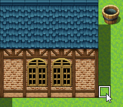

Editing Map Designs
Basic Editing Methods
Switch to Editing Mode
To edit the design of your map, click the [Map] button on the toolbar (or [Mode] → [Map] in the menu) to switch to Editing Mode.
Selecting Map Data
Click to select the map data you wish to edit in the Map List found at the bottom left of the window. The design of the map will be displayed in the Map View on the left side.
Selecting Tiles
Click to select a tile that you will draw from the Tile Palette. The tile that is currently selected will have a white frame around it. Tiles displayed in the Tile Palette will be switched when you click one of the A through E tabs at the bottom.
You can select multiple tiles at once to draw on by drag-selecting them on the Tile Palette.
Selecting the Drawing Tool and Drawing
You can select tools (the below 5 types) which can be used for drawing tiles by clicking them on the toolbar. Also, tiles will be drawn when you click or drag on the map display area (Map View) on the right side of the window. Each tool can also be selected from the [Draw] Menu.
You can erase tiles that you have drawn by drawing transparent tiles. You can find the transparent tile in the upper left of the upper layer B tab.
- Pencil
- Draws the selected tile in the spot that you have clicked.
- Rectangle
- The selected tile will be drawn in a rectangular area produced by clicking and dragging the cursor diagonally with the beginning of the drag being the starting point and the end of the drag being the ending point.
- Ellipse
- The selected tile will be drawn in a ellipse within a square area produced by clicking and dragging the cursor diagonally with the beginning of the drag being the starting point and the end of the drag being the ending point.
- Flood Fill
- Tiles will be drawn from the location of the tile you click and on all surrounding tiles of the same type that are connected.
- Shadow Pen
- Add or delete shadows for things such as walls in the location you click.
Other Editing Functions
- Autotile
- A feature called [Autotile] is included in the tiles displayed in the A tab of the Tile Palette. With autotiles, one type of tile contains several patterns, and the border of the tile will be adjusted automatically depending on how the tiles are placed. Tiles which have the autotile function are assigned to [A1] through [A4] in the database [Tilesets].
Moreover, you can temporarily disable the autotile function by holding [Shift] and drawing tiles or using the eyedropper. - Autoshadows
- Within autotiles, by placing two or more tiles vertically, a shadow will automatically be drawn to the bottom right of that tile. However, specified tiles will not have shadows drawn on them.
- Shadow Pen
- The Shadow Pen is a tool that allows you to draw shadows for walls and buildings. You can darken the hue by 1/4th of the size of a tile.
Click the [Shadow Pen] button on the toolbar (or go to [Draw] → [Shadow Pen] in the menu), and click on the Map View. A shadow is drawn by clicking on a part which has no shadow, and by clicking a part which already has a shadow, that shadow will be removed. - Upper Layer Tile Special Specifications
-
- You can layer 2 different types on the upper maps B-E.
* When layering a 3rd tile, the 1st upper tile will disappear.
* When the 3rd tile layered is the same as the 2nd tile, the first tile will not disappear.
* Only the upper left B tile can erase all upper tiles. - When a passable tile and an impassable tile are layered, the effect of the tile layered last takes priority.
* Even when a passable ☆ tile is on the bottom, the tile with the ☆ will be displayed on top.
* When a passable ☆ tile is layered, the impassable tile's effect will take priority.
- You can layer 2 different types on the upper maps B-E.
- Lower Layer Tile Special Specifications
- Amongst the tiles that are displayed in the [A] tab of the Tile Palette, those items found in [A2] in the tileset properties are divided into [Base] (tiles 1 to 4 from the left, or the left half) and [Decoration] tiles (tiles 5 to 8 from the left, or the right half). Decoration tiles can be placed on top of base tiles.
However, for those [Tilesets] which have their [Mode] set to [World Type] in the tileset properties, when placing a decoration tile that is stacked on a 2nd or 4th base tile, the base tile will change either the 1st or 3rd base tile.